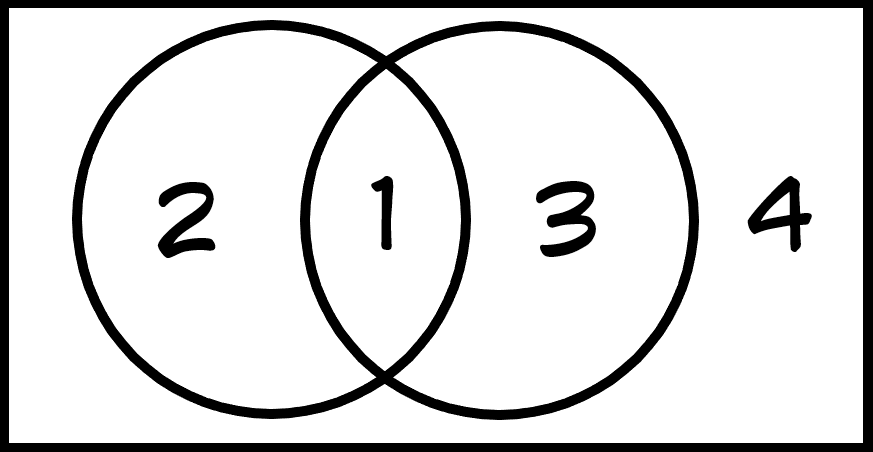
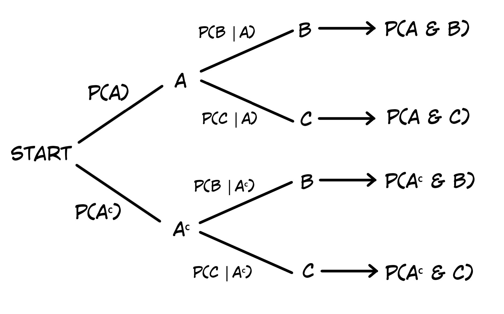

back to all liu packets
back to home
hw packet 6
the idea of probability
probability
- long run relative freq
- it's always between 0 & 1 inclusive
- short term → unpredictable
- long term → predictable
law of large #'s
if we do something a shitton of times, the proportion of the desired outcomes
will approach the probability of the desired outcome
simulation
simulation: imitation of a chance behavior based on a model that accurately reflects
the situation
ex: dice, coin flip, applet, rng, gacha games
sim process:
- describe how you'll simulate 1 trial/repetition
- perform a shitton of em
- use the results to answer the question
basic probability rules
probability model
- lists all outcomes & their respective probabilities
- must add to 1
- each chance is between 0 & 1
random stuff
- \(P(E)=\) chance of \(E\) occurring
- complement = chance of something NOT happening
- \(P(E^C)=1-P(E)\)
- mutually exclusive/disjoint = events can't occur together
- addition rule: \(P(A\text{ or }B)=P(A)+P(B)\), given that A & B are mutually exclusive
venn diagrams, general addition rule
2 way table (contingency table)
|
B |
Bc |
total |
| A |
1 |
2 |
|
| Ac |
3 |
4 |
|
| total |
|
|
|
venn diagram

general addition rule
\[P(A\text{ or }B)=P(A)+P(B)-P(A\text{ and }B)\]
- \(P(A\text{ or }B)=P(A \cup B)\) "union"
- \(P(A\text{ and }B)=P(A \cap B)\) "intersection"
if A & B are disjoint, \(P(A \cap B)=0 \rightarrow P(A \cup B)=P(A)+P(B)\)
conditional probability & independence
conditional probability
\[P(A|B)=\frac{P(A\text{ and }B)}{P(B)}\]
it's the chance that A happens given that B's already happened
independence: when knowing whether one event's occurred DOESN'T
affect the probability of the second event
\(P(A)=P(A|B)=P(A|B^C)\) means that A & B are independent
conditional probability & tree diagrams
general multiplication rule
\[P(A\text{ and }B=P(A) \cdot P(B|A)\]
if A & B are independent, it can be simplified to just \(P(A) \cdot P(B)\)
here's an example tree diagram he drew

"at least 1" rule: \(P(\text{at least 1})=1-P(\text{none})\)